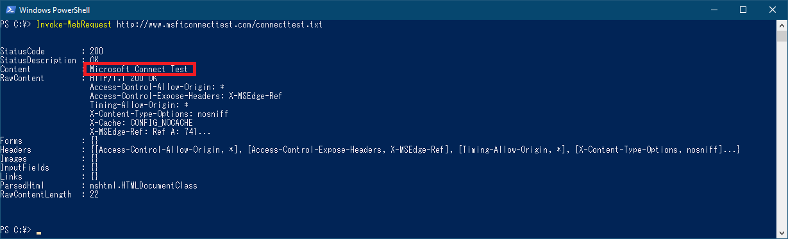

こんにちは、日本マイクロソフト Windows プラットフォーム サポートです。
本 Blog では、NCSI と呼ばれる OS の機能について、動作の概要や問題発生時の対応策などをご案内します。
1. NCSI の概要
ネットワーク接続状態インジケーター (NCSI) の目的
ネットワーク接続状態インジケーター (NCSI : Network Connectivity Status Indicator) は、インターネットへのアクセス可否などを判定する OS の機能です。
アプリケーションから OS の NCSI が判定した結果を利用することで、アプリケーションごとにインターネット アクセス可否を判定する処理を実装することなく、コンピューターのネットワークへの接続状態をチェックすることができます。
タスク トレイのネットワーク アイコンで、ネットワークの接続状態を示すことも NCSI の機能の一部です。
NCSI の動作
NCSI は “アクティブ プローブ” と “パッシブ プローブ” と呼ばれる 2 種類の動作で、ネットワークへの接続時などにインターネットへのアクセス可否を判定します。
アクティブ プローブの動作
アクティブ プローブでは、”HTTP プローブ”、”DNS プローブ” の 2 種類のテストによってインターネット アクセス可否を判定します。
a. HTTP プローブの判定内容
“HTTP プローブ” では、HTTP でテキストファイルをダウンロードして期待する文字列を得られるかどうかチェックして、インターネット アクセス可否を判定します。
Windows 10 Version 1607 以降 :
以下の URL のテキストファイルをダウンロードして、”Microsoft Connect Test” という文字列が得られるかチェックします。
- IPv4 の場合 : http://www.msftconnecttest.com/connecttest.txt
- IPv6 の場合 : http://ipv6.msftconnecttest.com/connecttest.txt
Windows 10 Version 1511 以前 :
以下の URL のテキストファイルをダウンロードして、”Microsoft NCSI” という文字列が得られるかチェックします。
- IPv4 の場合 : http://www.msftncsi.com/ncsi.txt
- IPv6 の場合 : http://ipv6.msftncsi.com/ncsi.txt
プロキシを経由しない HTTP プローブの動作フロー (Windows 10 Version 1607 以降、IPv4 の場合)

プロキシを経由する HTTP プローブの動作フロー (Windows 10 Version 1607 以降、IPv4 の場合)
b. DNS プローブの判定内容
“DNS プローブ” では、”dns.msftncsi.com” の DNS 名前解決を行い、以下の解決結果を得られるかどうかによって、インターネット アクセス可否を判定します。
- IPv4 の場合 : 131.107.255.255
- IPv6 の場合 : fd3e:4f5a:5b81::1
DNS プローブの動作フロー
パッシブ プローブの動作
パッシブ プローブは既定で 15 秒間隔で動作し、ネットワークの通信状況をモニタリングしてインターネットアクセス可否を判定します。
2. 事象の例
NCSI で「インターネットアクセスなし」と判定された場合、Edge や Internet Explorer などのブラウザでインターネットアクセスが可能であっても、以下のような事象が発生します。
事象 1. タスク トレイのネットワーク アイコンが「インターネット アクセスなし」(地球儀マーク) となる。
タスクトレイのネットワーク アイコンの状態が以下の画像のように 「インターネット アクセスなし」 の状態となります。
または
事象 2. Office のサインインでネットワーク接続がない旨のメッセージが表示される。
Office のサインインを行うときに、以下のようにネットワーク接続がない旨のメッセージが表示されます。
メッセージ内容：「現在接続できません。ネットワークを確認して、後でもう一度お試しください」
参考 : Office のサインインでネットワーク接続がない旨のメッセージが表示される事象について
事象 3. Outlook にて接続不可となり、先進認証ができない場合がある。
Outlook による先進認証が失敗し、以下のようにネットワーク接続がない旨のメッセージが表示されます。
メッセージ内容：「現在接続できません。ネットワークを確認して、後でもう一度お試しください。」
参考 : インターネット接続性チェックが失敗する環境で Outlook による先進認証が失敗する
3. 切り分け方法
NCSI に起因する問題が疑われる場合、以下のように状態を確認します。
(1) NCSI が判定した Connectivity 状態の確認
NCSI が「インターネットアクセスなし」と判定することに起因して事象が発生しているか確認するため、事象発生時に PowerShell で以下のコマンド実行結果を確認します。
1 | > Get-NetConnectionProfile |
NCSI ではネットワークアダプターごとに IPv4Connectivity/IPv6Connectivity の状態を保持します。
使用しているネットワークアダプターで “Internet” (インターネットアクセスあり) と判定されているか確認します。”NoTraffic” や “LocalNetwork” となっている場合、「インターネットアクセスなし」と判定されています。
イントラネット接続時の例 :
イーサネット アダプターで “Internet” (インターネットアクセスあり) となっています。
VPN 接続時の例 :
VPN アダプターで “Internet” (インターネットアクセスあり) となっています。
(2) HTTP プローブ先へのアクセス可否の確認
PowerShell の Invoke-WebRequest で以下の URL にリクエストを送信して、期待される文字列が表示される確認します。
Windows 10 Version 1607 以降 :
以下の URL にアクセスして、”Microsoft Connect Test” という文字列が得られるかチェックします。
IPv4 の場合 : http://www.msftconnecttest.com/connecttest.txt
IPv6 の場合 : http://ipv6.msftconnecttest.com/connecttest.txt
Windows 10 Version 1511 以前 :
以下の URL にアクセスして、”Microsoft NCSI” という文字列が得られるかチェックします。
IPv4 の場合 : http://www.msftncsi.com/ncsi.txt
IPv6 の場合 : http://ipv6.msftncsi.com/ncsi.txt
Invoke-WebRequest http://www.msftconnecttest.com/connecttest.txt を実行した場合の例 :

(3) DNS プローブ先の解決可否の確認
プロキシを使用していない環境では、以下の nslookup コマンドを実行して期待されるアドレスが解決されるか確認します。
1 | > nslookup dns.msftncsi.com. |
nslookup dns.msftncsi.com. の実行例 :
4. 対応策
インターネットアクセス可能な環境にも関わらず、NCSI で「インターネットアクセスなし」と判定される場合、以下のような対策が有効です。
(1) 2021 年 8 月 10 日以降の更新プログラムを適用
Windows 10 Version 1809 以降を対象に 2021 年 8 月 10 日以降 (2021 年 7 月の Preview 以降) の更新プログラムで NCSI の動作改善が含まれています。
2021 年 8 月 10 日の更新プログラムは以下です。これ以降の更新プログラムを適用して、改善が見られるか確認ください。
- Windows 10 Version 2004, 20H2, 21H1 : August 10, 2021—KB5005033 (OS Builds 19041.1165, 19042.1165, and 19043.1165)
- Windows 10 Version 1909 : August 10, 2021—KB5005031 (OS Build 18363.1734)
- Windows 10 Version 1809 : August 10, 2021—KB5005030 (OS Build 17763.2114)
(2) グローバル DNS を設定
Windows 10 Version 1903, 1909, 2004, 20H2, 21H1 (*) で、プロキシ経由での HTTP プローブを行うためには、グローバル DNS (UseGlobalDns) の有効化が必要となることがあります。
以下の Blog を参照して設定ください。
参考 : Windows 10 でネットワーク アイコンが “インターネット アクセスなし” となる事象について
(*) Windows 10 Version 2004, 20H2, 21H1 で 2021 年 8 月 10 日以降 (2021 年 7 月の Preview 以降) の更新プログラムを適用済みの場合は、グローバル DNS の有効化は必要ありません。
(3) パッシブ プローブの判定基準の変更
パッシブ プローブでは、ネットワーク通信パケットのホップ数をインターネット アクセスの判定条件として利用します。
既定では 8 ホップ以上をインターネット アクセスと判定しますが、以下のレジストリを追加することで判定条件を変更することができます。
レジストリ設定 :
キー : HKEY_LOCAL_MACHINE\SYSTEM\CurrentControlSet\Services\NlaSvc\Parameters\Internet
名前 : MinimumInternetHopCount
設定値 : 1 (デフォルト値 : 8)
種類 : DWORD
(*) 設定を追加後、OS 再起動が必要です。
(4) プロキシの認証対象から除外
プロキシが認証要求を行う環境では、NCSI の HTTP プローブが影響を受ける場合があります。
以下の HTTP プローブの宛先サイトはプロキシで認証を要求しないように構成する必要があります。
Windows 10 Version 1607 以降 :
IPv4 の場合 : http://www.msftconnecttest.com/connecttest.txt
IPv6 の場合 : http://ipv6.msftconnecttest.com/connecttest.txt
Windows 10 Version 1511 以前 :
IPv4 の場合 : http://www.msftncsi.com/ncsi.txt
IPv6 の場合 : http://ipv6.msftncsi.com/ncsi.txt
5. 情報採取手順
上記の対応策を実施しても効果が見られない場合などは、以下の情報を採取して弊社サポートにお問い合わせください。
タスク バーのネットワーク アイコンに黄色の警告マークまたは地球儀アイコンが表示される事象の調査に必要な資料について
更新履歴
2021/09/30 : 本 Blog の公開
2023/03/30 : 「3. 切り分け方法」の「(2) HTTP プローブ先へのアクセス可否の確認」の内容を更新
[特記事項]
本情報の内容 (添付文書、リンク先などを含む) は、作成日時点でのものであり、予告なく変更される場合があります。